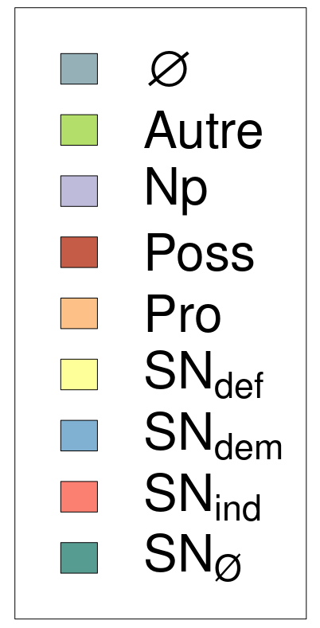

Longueur nb maillons : 268 mentions |
 |
La matinée se passe entre les leçons de [ces demoiselles] , des affaires de la maison et des écritures ; l'après-midi à lire des contes de fées avec Rosalie et à vous écrire. [2 phrases]
Il est charmant, il dîne avec nous au grand contentement de [ses sœurs] , rien n'est si mignon que de voir leurs caresses réciproques ». [57 phrases] Le père de Rosalie ne faisait -il pas un peu peur aux contemporaines de [ses filles] ?? [48 phrases]
» Je [vous] prie de me donner des nouvelles de [votre] grand'mère et des [vôtres] [2 phrases] « Comme je [vous] l'ai dit, j'ai une annonce demain, et je compte toujour aller à la fin de la semaine prochaine à Dardagny [ chez les Châteauvieux ] et en revenir avec une compagne qui sûrement nous rendra tous heureux.
Elle aurait bien envie de voir [mes filles] et j'attends de [vous] des sentimens d'enfans qui sont bien nés ». [25 phrases]
S'il n'y eut pas guerre ouverte, ce fut plutôt une négation de rapports ; on se demandera souvent en lisant dans la suite la correspondance du père et [des filles] quel rôle jouait cette nouvelle mère, et on en viendra à conclure qu'elle jouait pour le moins un rôle fort effacé. [2 phrases]
Mme Pictet déclara d'emblée qu'elle ne voulait plus garder chez elle [ses petites-filles] ; finalement elle temporisa car au fond elle regrettait de s' [en] séparer.
La veille de son mariage, Samuel écrit ce qui suit à [Rosalie et à sa sœur] : Je [vous] aime, aux défauts de [votre] âge près, je [vous] trouve [de bons et aimables enfans] , je [vous] promets que je ferai tout ce que je pourrai pour que nous soyons heureux ensemble, ce sont aussi les sentimens de Mlle Gallatin, [vous] trouverez en elle une bien bonne amie et une mère tendre. [1 phrases] Je vois aussi, [mes chères filles] , dans cette séparation [ d'avec Mme Pictet ] tout ce que [vous] aurez à souffrir, [vous] aimez votre grand'mère et [vous] avez pour elle la tendresse et le respect que [vous] lui devez par tant de raisons, [vous] ne pouvez [vous] séparer d'elle sans chagrin et sans désespoir ; j'espère bien que [vous] le sentirez et que [vous] le lui témoignerez. Ne [négligez] rien pour obtenir d'elle sa bénédiction. Dans tout ce que je [vous] ai conseillé, mon but a été de former [vos] sentimens et il serait cruellement manqué si [vous] n'avez pas pour elle les plus grands respects …… [2 phrases]
Les nouveaux époux s'établirent à la rue de l'Hôtel-de-Ville, maison Argand, où [leurs filles] les rejoignirent plus tard. Du même [aux mêmes] : « Je n'ai point pu [vous] envoyer chercher ni hier ni avant-hier et je ne sais point quand je le pourrai. Le fait est qu'il ne me convient point de [vous] envoyer chercher dans ce moment, et je prendrai celui qui me conviendra. [Vous] étiez hier dans le carrosse de votre grand'mère, elle peut [vous] renvoyer quand il lui plaira, [vous] serez toujours bien reçues, [votre] chambre [vous] attend.
Il ne faut renvoyer [vos] maîtres que quand [vous] serez bien sûres de revenir ». [1 phrases] « Je suis très content, [mes chères filles] , que votre grand'mère n'envoie personne et surtout aucun de ses domestiques chez nous. Quand [vous] aurez des réponses à me faire, [vous] pourrez les envoyer chez les demoiselles Albanel, marchandes de modes à la Fusterie, où nous faisons prendre nos lettres de Suisse, et moi j'enverrai les miennes toujours chez Barbier. Ce sera l'occasion de [vous] exercer pour l'écriture et pour l'orthographe dont Mlle Lisette a fait beaucoup de fautes dans cette dernière. De plus je [vous] verrai quand il me plaira de me donner cet honneur et ce plaisir, et comme j'en suis très impatient je [vous] enverrai prendre avec le cabriolet jeudi, à dix heures, et je me donnerai aussi les airs de [vous] renvoyer quand il me plaira. [4 phrases]
»
Empruntons ici une page au cahier vert : [1 phrases] Ma belle-mère était alors bonne et aimable pour [nous] [4 phrases] [Nous] étions, ma sœur et moi, dans cet âge heureux où le bonheur est facile, où aucun sentiment trop vif, aucune idée inquiétante ne trouble encore les jouissances du moment. [2 phrases]
» [Les deux enfants] allèrent passer l'hiver 1772-73 à Paris avec leur grand'mère.
Le principal but était de faire redresser la taille de Rosalie par l'ami de [leur] père, le Dr Tronchin, qui venait de quitter Genève pour Paris. [2 phrases]
Le 7 décembre, quatre jours après le départ [des voyageuses] , son père, toujours soucieux de sa bonne éducation, lui écrivait : Je ne [vous] recommande que de [vous] occuper du but de [votre] voyage, de revenir [grandes filles] On exigera beaucoup de [ces demoiselles] [qui] reviennent de Paris. [1 phrases]
» [1 phrases]
[Vous] avez peu d'amis, peu de parens, c'est-à-dire que peu de personnes sont appelées à [vous] aimer et à [vous] supporter ; [vous] n'aurez donc d'existence que par [vos] bonnes qualités. [2 phrases] [Vous] êtes logées dans un quartier charmant et où il y a bien des choses à voir. N'allez -vous pas [vous] promener bien aisément dans le jardin du Palais-Royal?? [8 phrases] « J'ai négligé de [vous] communiquer la mort de Mme d'Hermenches, ma belle-sœur. [10 phrases] Pour [les demoiselles de Constant] , comme pour les étrangers et provinciaux de tous les temps, c'était la ville des plaisirs et du luxe ; et, déjà en 1772, un des principaux attraits était les boulevards, mais combien différents des boulevards de nos jours!! [4 phrases] Parties de St-Jean le 3 décembre 1772, en compagnie de [leur] grand'mère et de trois autres dames de Genève, [nos] voyageuses atteignirent Paris le 9 au soir et eurent grand'peine à s'y loger.
Enfin [elles] trouvèrent place dans un hôtel garni appelé Hôtel de Bayonne, rue St-Honoré, en face de l'Opéra. [1 phrases] « [Nous] [nous] amusions beaucoup à voir la beauté des équipages et la parure des femmes qui entraient à l'Opéra. [4 phrases] « Le lendemain, [nous] allâmes au charnier des Saints-Innocens faire quelques emplettes. [1 phrases]
» [3 phrases] Le spectacle aussi attirait [les filles de Samuel et de Charlotte] [1 phrases] [Ces demoiselles] avaient retrouvé à Paris plusieurs amies de [leurs] parents MMmes de Luchet, Favre, Necker, Des Barry, Diodati, de la Richardière, MM. de Lacorbière, Tronchin, de Flavigny, etc. [1 phrases]
Mme de Vermenoux offrit de suite [aux jeunes filles] de [les] conduire dans son carrosse à l'Opéra ; ce fut elle aussi qui [leur] organisa des leçons de danse. « [Nous] fûmes aux secondes loges, la salle est superbe, toute dorée et parfaitement illuminée. [3 phrases] On jouait ce soir -là Adèle de Ponthieu, opéra nouveau que [l'on] n'a pas trouvé bon, mais qui [nous] fit le plus grand plaisir, n'ayant jamais rien vu de pareil.
»
[Ces dames] ne pensent pas seulement aux spectacles, [elles] remplissent aussi [leurs] devoirs religieux. « Dimanche 20, [été] à l'hôtel de Hollande où habite l'ambassadeur. [1 phrases]
Et puis vite [on] revient aux boutiques ; c'est décidément ce qui, pour l'heure, intéresse le plus [ces demoiselles] « Le 23, [nous] avons pris un fiacre pour parcourir la Halle ; c'est un quartier de Paris où l'on vend toutes sortes de choses. [1 phrases] Le 25 [ jour de Noël ], [nous] fîmes la partie, avec [nos] compagnes de voyage, Mme Favre leur sœur, et M. Lacorbière, d'aller à la messe de minuit dans l'église de Notre-Dame, cathédrale de Paris. [3 phrases] « [Nous] y allâmes avec Mme de Luchet. [2 phrases] [Nous] [nous] engageâmes dans une des galeries où l'on était si serré qu'on étouffait. En sortant, [nous] [nous] perdîmes et ne [pûmes] retrouver [notre] carrosse ……
» [Nous] prenions quelquefois un fiacre le soir et [nous] allions [nous] promener devant les boutiques au quai de la Volaille ou voir Mme Favre et ses sœurs.
» [1 phrases] Un jour « [nous] fîmes la partie d'aller avec ces dames à Saint-Denis. En passant, [nous] [nous] arrêtâmes dans la campagne de M. Necker, à Saint-Ouen. [2 phrases] Des moines [nous] montrèrent les tombeaux des rois. [2 phrases] Les plus beaux sont ceux de François premier, de Louis 12, de Henri 3 et de Catherine de Médicis, ce qui [nous] indigna beaucoup. [2 phrases] « Quand [nous] eûmes vu tout ce qu'il y avait à voir, M. Favre [nous] mena malgré [nous] dans un mauvais cabaret où [nous] dînâmes fort mal. Après dîner [nous] allâmes voir le trésor de l'abbaye, un grand nombre de manteaux royaux, de couronnes d'or, des reliques, des châsses d'or où sont renfermés les os de quelque saint, des croix, des calices, des médailles, une quantité de pierreries, de perles fines …… [1 phrases] « Le 17, [nous] prîmes un carrosse de remise pour [nous] promener aux Tuileries ; c'est une des plus belles promenades de Paris ; elle se termine par la place de Louis 15, qui n'est pas encore achevée et qui sera superbe. [1 phrases] Le même jour après dîner [ on dînait à midi ], [nous] eûmes envie d'aller à la Muette, petite maison royale. [Nous] traversâmes Passy, qui est un beau village. [2 phrases] [Nous] allâmes ensemble [nous] promener dans le bois de Boulogne ; il doit être charmant l'été. [1 phrases]
[Nous] revînmes par la plaine des Sablons … [3 phrases] « Le 21, [nous] sommes allées à Bicêtre, qui est une maison de force et un hôpital. Comme Mme Favre connaissait Mme la supérieure, [nous] fûmes introduites chez elle. Elle allait se mettre à table et [nous] offrit à dîner, ce que [nous] n'acceptâmes pas. [Nous] vîmes d'abord les prisonniers qui travaillent à de fort jolis ouvrages de paille, puis les fous qui étaient dans une autre cour. Ceux qui n'étaient pas enchaînés vinrent [nous] offrir le bras et voulaient [nous] faire tout voir. [1 phrases] [Nous] sortîmes de là le plus vite que [nous] pûmes, c'était un triste spectacle. [2 phrases] Pour [se] réconforter, [on] s'en va dîner « dans une guinguette du faubourg Saint-Jacques, nommée Le bon Laboureur. » Mais ensuite, la grand'mère ramène-t -elle chez elle [ses petites-filles un peu nerveuses] ?? [1 phrases] « [Nous] remontâmes en carrosse pour aller à la Salpêtrière, qui est un hôpital immense.
» « [Nous] allâmes voir les chambres de travail, [on] voit dans une salle fort longue au bout de laquelle est un autel cinq cents jeunes filles qui travaillent à de superbes broderies en chantant des hymnes. [1 phrases] En sortant, [nous] vîmes une enfant qui [nous] intéressa beaucoup, elle était fort jolie et habillée plus proprement que les autres, elle [nous] fit mille caresses et [nous] pria de ne pas la mépriser avec tant de grâce que [nous] ne pûmes [nous] empêcher de lui donner mille bénédictions. Je désirai bien dans ce moment qu'il me fût permis de l'emmener avec [nous] et de lui faire tout le bien qu'elle méritait. [1 phrases]
Voici encore un récit qui plaît, car on y retrouve bien [les enfants] [que] devaient être [Rosalie et Lisette] « Le 24, [nous] allâmes voir Audino. [1 phrases] [Nous] étions à côté d'une dame et de sa fille avec qui nous liâmes conversation, mais ce qui m'étonna, c'est que la mère était mise en jeune et la fille en vieille. [1 phrases] Je m'amusai beaucoup, on jouait Le Petit Poucet, le Dénicheur de merles et Anidelle de Pontoise, une parodie de l'opéra d'Adèle de Ponthieu, que [nous] avons entendu. [7 phrases] [Nous] fûmes longtemps à la regarder. Les réflexions qu'elle [nous] suggérait n'étaient pas gaies.
[Nous] pensions à la quantité de malheureux renfermés dans ce triste séjour. [6 phrases] [Nous] l'examinâmes longtems, il me fit le plus grand plaisir, je crois que je ne pourrai jamais l'oublier. [1 phrases] Je vois avec plaisir que [vous] sentez les belles choses. Je le juge par ce que [vous] me dites du tombeau du cardinal de Richelieu, qui n'est bien frappant que pour ceux qui sentent les vraies beautés.
» Dans une foire quelconque ou bien à la bourse, [les sœurs] avaient mis à la loterie et gagné 300 francs!! [1 phrases] Tout de suite, [on] fait mille projets, [on] voit dans les boutiques les jolies choses qu' [on] pourra rapporter à la belle-mère, envoyer aux pensionnaires de Coire. Et puis, dit Rosalie, [nous] pourrons aller une ou deux fois de plus à la Comédie, cela ne déplaira pas au Père.
Vite [contons] -lui [notre] bonheur … [1 phrases] « Nous avons bien partagé le plaisir que [vous] a fait [votre] lot. Dieu veuille que [vous] soyez toujours heureuses. Il faut être content de ce petit bonheur et faire durer la jouissance tant que [vous] pourrez. Et à cet égard, j'ai des défenses très positives à [vous] faire. Ce n'est pas le Pi qui [vous] parle dans ce moment, c'est [votre] Père, à qui [vous] ne pouvez désobéir sans péché. [1 phrases] Je [vous] défends expressément, et sous peine de me faire le chagrin le plus vif, de rien acheter ni pour moi, ni pour [votre] maman, ni pour [vos] frères. Si par hasard [vous] avez déjà fait quelques emplettes, je [vous] ordonne de les revendre ou de les troquer et que nous n'en entendions plus parler, je [vous] en prie. [1 phrases] Je [vous] conseille d'abord, [mes chères filles] , d'en destiner 12 ou 18 francs pour une charité. [1 phrases] Ensuite, je [vous] conseille de garder le reste pour [vous] faire un fonds de bourse qui se trouvera dans quelque circonstance agréable et importante. Ainsi [gardez] et [rapportez] tout ce que [vous] pourrez. S'il [vous] convient d'acheter quelque chose de bon et d'utile, [vous] pourrez bien y employer deux ou trois louis, mais que ce ne soit point d'enfance, je [vous] en prie. Ce n'est point à [vous] à [vous] payer le maître à danser ni le dentiste …… , [apprenez] surtout à marcher, à entrer et saluer, à former [votre] contenance. [2 phrases] … N'entendez [-vous] point parler de la tragédie de M. de Voltaire?? elle doit bientôt se jouer et j'espère que [vous] la verrez. Je ne désapprouverai point que [vous] employassiez un peu de [votre] lot à aller au spectacle, ce sont [vos] affaires. [2 phrases] « Le dimanche 31 janvier, [nous] sommes parties pour Versailles à huit heures du matin avec M. de Flavigny. Sur le chemin [nous] rencontrâmes beaucoup de voitures qui y allaient, surtout beaucoup de pots de chambre. [2 phrases] [Nous] arrivâmes à dix heures. [1 phrases]
« Le château est d'une magnificence excessive, [nous] ne pouvions [nous] lasser de regarder et d'admirer. « [Nous] descendîmes de carrosse dans la première cour, [nous] vîmes les gardes françaises et les gardes suisses qui descendaient la garde avec une belle musique. De là, on [nous] conduisit à la chapelle qui est d'une beauté surprenante …… [1 phrases] [Nous] avions grande envie de rester pour entendre la messe du roi où il y a une musique superbe, mais on [nous] dit que l'on ne pouvait se dispenser de se mettre à genoux, et [nous] aimâmes mieux [nous] en passer [ ô huguenotes!! [1 phrases] « [Nous] allâmes voir les grands appartemens …… [3 phrases] « De là [nous] entràmes dans le salon de Mars qui est très beau, puis dans le salon d'Hercule, enfin dans la grande galerie. [2 phrases] « [Nous] y étions depuis quelque tems quand vint à passer la Dauphine qui allait au lever du roi. [5 phrases] « Peu après, [nous] vîmes passer le Roi qui allait à la messe, suivi de ses pages et de beaucoup de seigneurs. [2 phrases] [Nous] le vîmes revenir et de là [nous] allâmes voir dîner la Dauphine. [9 phrases]
« Quand [nous] eûmes vu cela, [nous] allâmes dîner dans un hôtel garni, et après, passer la soirée chez Mme le Gendre. « À neuf heures, [nous] allâmes voir souper le Roi, qui soupe tous les dimanches en public avec ses enfans. [2 phrases] [Nous] étions fort bien placées et il y avait beaucoup de monde. [25 phrases] [Nous] fîmes la route dans le parc de Versailles que [nous] n'avions point vu la veille à cause de la pluie. [24 phrases]
» [Nous] montâmes par les rouages, ce qui est un chemin fort difficile, à Louvecienne, maison de plaisance qui était à Mme la comtesse de Toulouse, belle-fille de Louis 14. [2 phrases] « Le 2 février, [nous] [nous] rendîmes de bonne heure dans la galerie pour voir passer la procession des cordons bleus qui se fait toutes les années. [8 phrases] [Nous] remarquâmes entre autres l'abbé Terrai, le contrôleur général des finances ; il est remarquable par la haine que toute la France a pour lui, et par tout le mal qu'il fait. [1 phrases] « Comme Mme de Queres qui était avec [nous] est fort belle, elle fut regardée et saluée de toute la procession. [4 phrases] « [Nous] profitons du temps qu'ils sont à la messe pour aller voir les appartemens du Roi. [1 phrases] De là [nous] passons à ceux de la Dauphine. [5 phrases] « Après le retour de la procession, tous les princes sont allés dîner et [nous] vîmes d'abord celui du comte d'Artois. [6 phrases] Pendant que [nous] y étions, il vint deux des plus belles femmes de la cour, Mme de Brionne et Mme d'Egmont, auxquelles on donna des tabourets, on les regardait beaucoup plus que ceux qu'on était venu voir. [1 phrases] « [Nous] passâmes ensuite chez Mesdames sœurs du Dauphin. [9 phrases]
« En quittant ce beau séjour du Roi de France, [nous] fûmes bien surprises de trouver des mendians déguenillés qui demandaient l'aumône dans les escaliers du château, cela [nous] révolta beaucoup. « [Nous] allâmes dîner chez Mme Legendre, [nous] en avions grand besoin, après avoir vu passer devant [nous] tant de bonnes choses. [1 phrases] [Nous] y restâmes jusques au soir que [nous] montâmes en carrosse pour retourner à Paris. En passant sur la place d'armes [nous] rencontrâmes Mme du Bari dans son carrosse avec Mme de Montmorenci et Mme de Rose. [7 phrases] « [Nous] sommes arrivées à Paris à huit heures du soir. Le lendemain, [nous] ne sommes point sorties, je me suis amusée à écrire mon voyage à Versailles.
» À côté des séances chez le Dr Tronchin, [ces demoiselles] étaient constamment en course soit avec [leur] grand'mère, soit avec quelque amie. En [les] suivant au jour le jour on trouvera peut-être que le récit de Rosalie est écrit dans un style un peu monotone, et cependant, par le fait que notre jeune voyageuse passait constamment du sérieux au plaisant, ses tablettes, on en conviendra, offrent une lanterne magique assez variée, sans compter les petites remarques enfantines qui reposent des sages descriptions de monuments dont nous passerons quelques-unes. |

|
La ressource peut être téléchargée sur la page Ortolang
Si vous avez des questions ou vous voyez des erreurs, merci d'envoyer un mail à silvia.federzoni89@gmail.com
Site développé par S. Federzoni (contact)